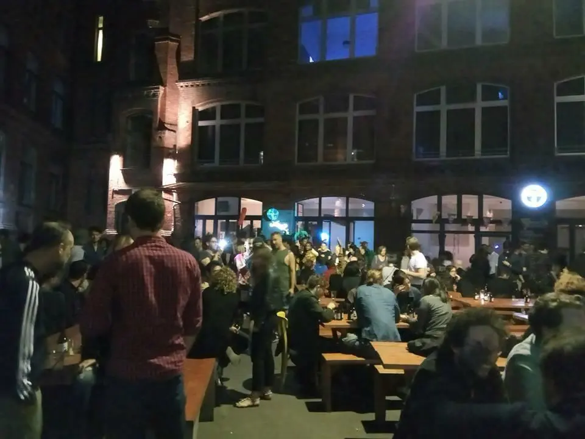

Hotels know how to sell rooms. Restaurants, bars and events are a different business entirely, with their own rhythm, people and risks. That is what outsourced food & beverage is for.
At Selina Berlin I led the hotel’s entire F&B operation against KPI targets, in a partnership model. It is the model I recommend to many boutique hotels: whoever runs the restaurant is a true partner in the outcome, not just another supplier.
Signs it’s time
- The restaurant is open, but rarely full of local guests.
- Hotel managers spend more time on kitchen problems than on guests.
- You have no clear weekly view of food cost and labour cost.
- Event enquiries arrive, but there is no team that knows how to sell, price and produce them.

Why a partnership model
When compensation is tied to agreed targets, everyone looks at the same numbers. The hotel gets a restaurant run like an independent business; the operator gets a real reason to succeed. What matters is defining the KPIs up front: what is measured, how often, and what happens when a number moves.
Good outsourcing doesn’t take responsibility away from the hotel. It places it with someone who knows how to carry it.
What the agreement should cover
- Clear targets: revenue, costs and guest satisfaction.
- Ownership of team, purchasing, maintenance and events.
- Full transparency: regular reporting and weekly working sessions.
- A concept that serves the hotel’s brand and draws an outside crowd.

The bottom line
If the restaurant in your hotel is an obligation rather than an asset, it is probably waiting for a different model. A short introductory call is enough to see whether outsourcing is right for you.

Shani Ahiel founded and ran Yafo and Shishi in Berlin and led the F&B operation at Selina Berlin. She advises restaurants and hotels on openings, turnarounds and ongoing operations.